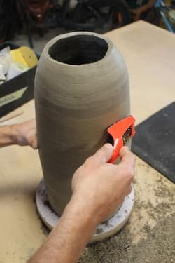
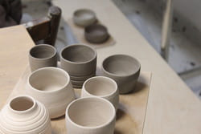
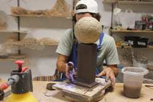

At Riton Ceramics, everything begins with a dream — and with two pairs of hands quietly at work. In our small island studio, surrounded by the slow rhythms of sea and sky, we shape clay through wheel-throwing, hand-building, and slip casting. Each method brings its own language and possibilities, and we move between them as ideas take form.
What starts as a simple block of earth slowly becomes something meant to be held, used, and loved. Every piece follows a long and careful journey. We design each form, make it by hand, and allow it to dry at its own pace. We sand, refine, and inspect every detail, paying attention to the smallest curves, edges, and textures.
Then comes the first firing, transforming fragile clay into something stronger, followed by more sanding and surface preparation. We glaze each piece individually, embracing the subtle variations that come from working by hand, and fire it once more to reveal its final character. Only after that do we document, weigh, carefully pack, and finally send each piece out into the world.
Our story began with earthenware, and while we are now moving toward stoneware and porcelain, traces of our beginnings still live in the studio. They remind us of where we started, of experiments, mistakes, and small victories, and of how far we’ve come since those first days. We continue to learn with every batch, every kiln opening, every unexpected result, always refining, always growing, while staying rooted in the values that shaped us from the start.